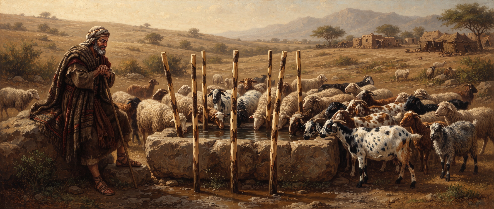

Genesis
Chapter Thirty
King James Version
And when Rachel saw that she bare Jacob no children, Rachel envied her sister; and said unto Jacob, Give me children, or else I die. 2And Jacob's anger was kindled against Rachel: and he said, Am I in God's stead, who hath withheld from thee the fruit of the womb? 3And she said, Behold my maid Bilhah, go in unto her; and she shall bear upon my knees, that I may also have children by her. 4And she gave him Bilhah her handmaid to wife: and Jacob went in unto her. 5And Bilhah conceived, and bare Jacob a son. 6And Rachel said, God hath judged me, and hath also heard my voice, and hath given me a son: therefore called she his name Dan. 7And Bilhah Rachel's maid conceived again, and bare Jacob a second son. 8And Rachel said, With great wrestlings have I wrestled with my sister, and I have prevailed: and she called his name Naphtali.
9When Leah saw that she had left bearing, she took Zilpah her maid, and gave her Jacob to wife. 10And Zilpah Leah's maid bare Jacob a son. 11And Leah said, A troop cometh: and she called his name Gad. 12And Zilpah Leah's maid bare Jacob a second son. 13And Leah said, Happy am I, for the daughters will call me blessed: and she called his name Asher.
14And Reuben went in the days of wheat harvest, and found mandrakes in the field, and brought them unto his mother Leah. Then Rachel said to Leah, Give me, I pray thee, of thy son's mandrakes. 15And she said unto her, Is it a small matter that thou hast taken my husband? and wouldest thou take away my son's mandrakes also? And Rachel said, Therefore he shall lie with thee to night for thy son's mandrakes. 16And Jacob came out of the field in the evening, and Leah went out to meet him, and said, Thou must come in unto me; for surely I have hired thee with my son's mandrakes. And he lay with her that night.
17And God hearkened unto Leah, and she conceived, and bare Jacob the fifth son. 18And Leah said, God hath given me my hire, because I have given my maiden to my husband: and she called his name Issachar. 19And Leah conceived again, and bare Jacob the sixth son. 20And Leah said, God hath endued me with a good dowry; now will my husband dwell with me, because I have born him six sons: and she called his name Zebulun. 21And afterwards she bare a daughter, and called her name Dinah.
22And God remembered Rachel, and God hearkened to her, and opened her womb. 23And she conceived, and bare a son; and said, God hath taken away my reproach: 24And she called his name Joseph; and said, The LORD shall add to me another son.
25And it came to pass, when Rachel had born Joseph, that Jacob said unto Laban, Send me away, that I may go unto mine own place, and to my country. 26Give me my wives and my children, for whom I have served thee, and let me go: for thou knowest my service which I have done thee. 27And Laban said unto him, I pray thee, if I have found favour in thine eyes, tarry: for I have learned by experience that the LORD hath blessed me for thy sake. 28And he said, Appoint me thy wages, and I will give it.
29And he said unto him, Thou knowest how I have served thee, and how thy cattle was with me. 30For it was little which thou hadst before I came, and it is now increased unto a multitude; and the LORD hath blessed thee since my coming: and now when shall I provide for mine own house also? 31And he said, What shall I give thee? And Jacob said, Thou shalt not give me any thing: if thou wilt do this thing for me, I will again feed and keep thy flock: 32I will pass through all thy flock to day, removing from thence all the speckled and spotted cattle, and all the brown cattle among the sheep, and the spotted and speckled among the goats: and of such shall be my hire. 33So shall my righteousness answer for me in time to come, when it shall come before thy face for my hire; every one that is not speckled and spotted among the goats, and brown among the sheep, that shall be counted stolen with me. 34And Laban said, Behold, I would it might be according to thy word.
35And he removed that day the he goats that were ringstraked and spotted, and all the she goats that were speckled and spotted, and every one that had some white in it, and all the brown among the sheep, and gave them into the hand of his sons. 36And he set three days' journey betwixt himself and Jacob: and Jacob fed the rest of Laban's flocks.
37And Jacob took him rods of green poplar, and of the hazel and chesnut tree; and pilled white strakes in them, and made the white appear which was in the rods. 38And he set the rods which he had pilled before the flocks in the gutters in the watering troughs when the flocks came to drink, that they should conceive when they came to drink. 39And the flocks conceived before the rods, and brought forth cattle ringstraked, speckled, and spotted. 40And Jacob did separate the lambs, and set the faces of the flocks toward the ringstraked, and all the brown in the flock of Laban; and he put his own flocks by themselves, and put them not unto Laban's cattle.
41And it came to pass, whensoever the stronger cattle did conceive, that Jacob laid the rods before the eyes of the cattle in the gutters, that they might conceive among the rods. 42But when the cattle were feeble, he put them not in: so the feebler were Laban's, and the stronger Jacob's. 43And the man increased exceedingly, and had much cattle, and maidservants, and menservants, and camels, and asses.
9When Leah saw that she had left bearing, she took Zilpah her maid, and gave her Jacob to wife. 10And Zilpah Leah's maid bare Jacob a son. 11And Leah said, A troop cometh: and she called his name Gad. 12And Zilpah Leah's maid bare Jacob a second son. 13And Leah said, Happy am I, for the daughters will call me blessed: and she called his name Asher.
14And Reuben went in the days of wheat harvest, and found mandrakes in the field, and brought them unto his mother Leah. Then Rachel said to Leah, Give me, I pray thee, of thy son's mandrakes. 15And she said unto her, Is it a small matter that thou hast taken my husband? and wouldest thou take away my son's mandrakes also? And Rachel said, Therefore he shall lie with thee to night for thy son's mandrakes. 16And Jacob came out of the field in the evening, and Leah went out to meet him, and said, Thou must come in unto me; for surely I have hired thee with my son's mandrakes. And he lay with her that night.
17And God hearkened unto Leah, and she conceived, and bare Jacob the fifth son. 18And Leah said, God hath given me my hire, because I have given my maiden to my husband: and she called his name Issachar. 19And Leah conceived again, and bare Jacob the sixth son. 20And Leah said, God hath endued me with a good dowry; now will my husband dwell with me, because I have born him six sons: and she called his name Zebulun. 21And afterwards she bare a daughter, and called her name Dinah.
22And God remembered Rachel, and God hearkened to her, and opened her womb. 23And she conceived, and bare a son; and said, God hath taken away my reproach: 24And she called his name Joseph; and said, The LORD shall add to me another son.
25And it came to pass, when Rachel had born Joseph, that Jacob said unto Laban, Send me away, that I may go unto mine own place, and to my country. 26Give me my wives and my children, for whom I have served thee, and let me go: for thou knowest my service which I have done thee. 27And Laban said unto him, I pray thee, if I have found favour in thine eyes, tarry: for I have learned by experience that the LORD hath blessed me for thy sake. 28And he said, Appoint me thy wages, and I will give it.
29And he said unto him, Thou knowest how I have served thee, and how thy cattle was with me. 30For it was little which thou hadst before I came, and it is now increased unto a multitude; and the LORD hath blessed thee since my coming: and now when shall I provide for mine own house also? 31And he said, What shall I give thee? And Jacob said, Thou shalt not give me any thing: if thou wilt do this thing for me, I will again feed and keep thy flock: 32I will pass through all thy flock to day, removing from thence all the speckled and spotted cattle, and all the brown cattle among the sheep, and the spotted and speckled among the goats: and of such shall be my hire. 33So shall my righteousness answer for me in time to come, when it shall come before thy face for my hire; every one that is not speckled and spotted among the goats, and brown among the sheep, that shall be counted stolen with me. 34And Laban said, Behold, I would it might be according to thy word.
35And he removed that day the he goats that were ringstraked and spotted, and all the she goats that were speckled and spotted, and every one that had some white in it, and all the brown among the sheep, and gave them into the hand of his sons. 36And he set three days' journey betwixt himself and Jacob: and Jacob fed the rest of Laban's flocks.

41And it came to pass, whensoever the stronger cattle did conceive, that Jacob laid the rods before the eyes of the cattle in the gutters, that they might conceive among the rods. 42But when the cattle were feeble, he put them not in: so the feebler were Laban's, and the stronger Jacob's. 43And the man increased exceedingly, and had much cattle, and maidservants, and menservants, and camels, and asses.
Study: A House Divided, A Flock Multiplied
This chapter opens where chapter 29 left off, except the sisters' positions have flipped. Leah has four sons; Rachel, the beloved wife, has none, and her desperation is raw enough to say it plainly to Jacob's face: "Give me children, or else I die." Jacob's answer is sharp and unsympathetic — "Am I in God's stead?" — the first real crack of tension the text lets us see between them.
What follows is a strange, escalating competition. Rachel gives her servant Bilhah to Jacob as a substitute womb, naming the resulting sons after her own sense of vindication ("God hath judged me," "with great wrestlings have I wrestled with my sister, and I have prevailed"). Leah, no longer bearing children herself, answers by handing over her own servant Zilpah, and two more sons arrive. Even the strange mandrakes episode — Reuben's field find becoming currency in a bargain over who gets to sleep with their shared husband that night — reads less like romance and more like two sisters keeping score.
A note on sourcing: as with several of Jacob's middle chapters, I searched specifically for commentary on Rachel's demand, the surrogate sons, the mandrakes, and Rachel's own naming of Joseph, and found nothing usable. What follows on those sections is a plain reading of the text itself.
After years of that rivalry, the chapter finally turns tender. Rachel conceives at last, and her words carry real weight after everything that came before: "God hath taken away my reproach." She names her son Joseph, and even the name itself looks forward — "the LORD shall add to me another son," a hope that won't be fulfilled until much later in the story.
With Joseph finally born, Jacob asks to leave for home, and Laban, unwilling to lose the source of his own prosperity, offers him whatever wages he names. What Jacob proposes sounds almost too generous to Laban — take only the speckled, spotted, and unusually colored animals, a small minority of any normal flock — and Laban agrees immediately, then quietly moves all the existing speckled animals three days away to make sure Jacob starts with nothing.
Jacob's response is the same kind of resourceful scheming this study has traced back through his whole life, dating to his very name.
“
“Jacob thought he was a great guy once, you know, he could just cheat and get by with anything. Went and put some poplar sticks in where his father-in-law's sheep and cattle when they were pregnant, and turned them into speckled sheep... the first thing you know, Jacob become a great man.”
— William Branham, “Perfect Strength by Perfect Weakness” (61-1119)
Whatever the actual biology behind peeled rods and speckled offspring, the text is clear that Jacob applied the trick selectively — using it only on the stronger animals, leaving Laban with the weaker half of the flock by default. It's the same pattern that's marked every major turn in his life so far: a man who gets what he wants less through direct confrontation than through carefully engineered circumstances, working quietly in the background while everyone else is looking somewhere else.